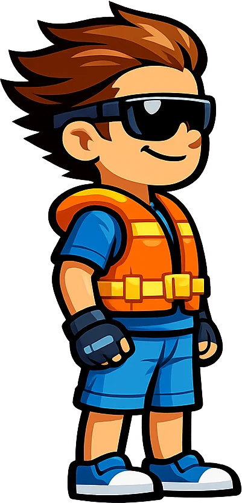

Support
Stuck on something? Most answers are below. If yours isn't, write to us and a real person will reply.

Questions
Why did my run end?
A run ends one of two ways. Either the tank ran dry, or the boat went over.
Fuel: cans float on the water ahead of you, and the gap between them grows every time. Sooner or later a gap is longer than your tank, so every run ends by itself. Upgrades are how you push that point further out.
Capsize: roll past your boat's tipping angle and stay there, or dunk the skipper's head while you're upside down, and that's the run. The Hull upgrade widens how far a boat can lean before it goes over.
The engine screams but the boat won't speed up. Why?
Your propeller is out of the water. The revs climb the moment you press throttle, but the push only arrives when the prop actually bites. Over a crest, in the air or riding nose-high, it's spinning in thin air, and you'll hear the engine over-rev.
Let the stern settle back in, then open it up again. Upgrading the Propeller (its lane is called BITE) gives you more grip and a faster recovery after a landing.
How do the two buttons work?
Right thumb is Throttle, left thumb is Brake. On the water the brake slows you, then backs you up, and also tips the bow down. In the air, Throttle lifts the nose and Brake drops it. That's how you flip, and how you line up a landing.
What does "TURN BACK" mean?
You can't retreat down the course. A current builds behind the furthest point you've reached and pushes you forward again, and the warning shows when you back into it. It isn't a penalty, just a nudge to turn around.
How do I unlock new boats and seas?
With coins. You earn them from pickups, distance and every stunt you land. The first few seas can also open for free: ride far enough on the Calm Lake and the next one unlocks on the spot.
I lost my progress. Can it be restored?
Your coins, pearls, boats, seas, upgrades and best distances are saved on your device. There's no cloud save yet, so reinstalling the game, clearing its data or moving to a new phone starts you fresh.
Leaderboard scores and achievements are the exception. They live with your Google Play Games or Game Center account and follow it to a new device.
If you lost progress right after a purchase, email us with your device and roughly what you'd bought, and we'll do what we can.
Does Wave Rider work offline?
Yes. Every boat, sea and run plays offline, and there's no account to make. You need a connection for ads, rewarded-ad bonuses and leaderboards.
How do ads and in-app purchases work?
Wave Rider is free and supported by ads. Rewarded ads, like doubling a run's coins or a second chance with half a tank, are always optional. You only see one if you tap to watch it.
You can buy coin packs, and a one-time Remove Ads that permanently turns off banner and interstitial ads. Rewarded ads stay available after Remove Ads, because you choose those yourself. Purchases go through the App Store or Google Play.
I bought something and didn't get it. What now?
First, tap Restore Purchases, either in Settings or in the coin store. If it still hasn't arrived, email us with your receipt and we'll sort it out.
Remove Ads restores on a new device with the same store account. Coin balances live on your device and don't carry over.
Refunds are handled by the store you bought from:
- iPhone and iPad: reportaproblem.apple.com
- Android: your Google Play order history
How do I change my advertising or privacy choices?
Open Settings → Privacy Choices in the game to bring the consent form back and change your answers, where that form applies to your region. You can also reset or limit your advertising ID in your phone's settings. The Privacy Policy has the exact steps for iOS and Android.
Which devices does it run on?
iPhone and iPad on iOS 15 or later, and Android phones and tablets on Android 7.1 or later. The game plays in landscape.
Found a bug?
A good report gets fixed fast. When you email us, please include:
- Your phone or tablet model (for example iPhone 13 or Pixel 7)
- The iOS or Android version
- The game version, from the store page or your device's app info
- Which boat and which sea you were on
- What happened, and what you expected to happen
- How to make it happen again, if you know
- A screenshot or screen recording, if you can